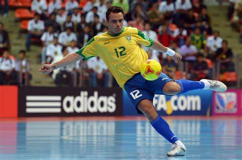
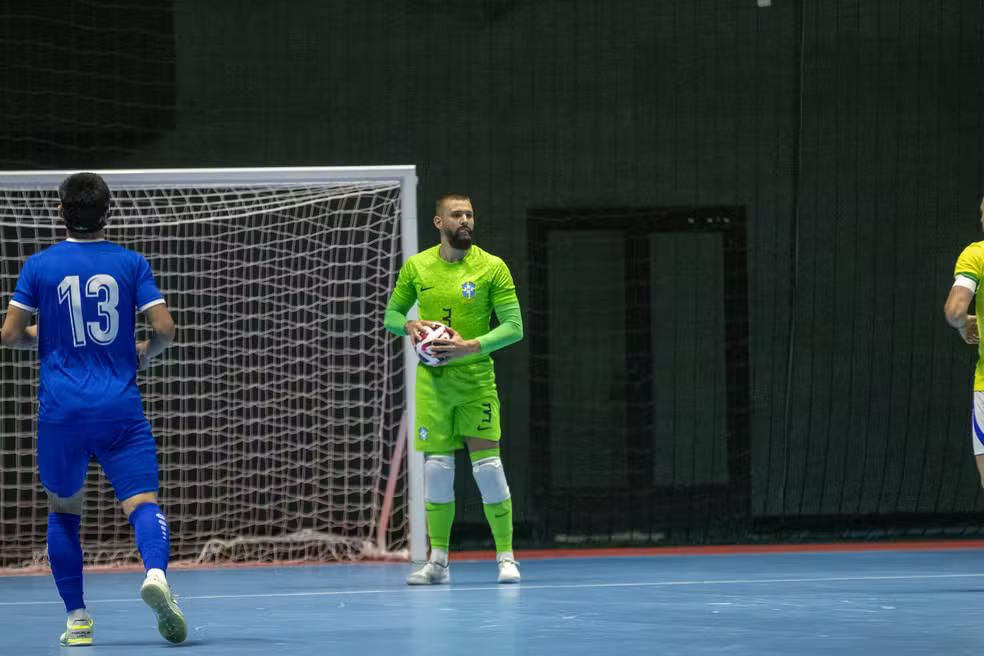
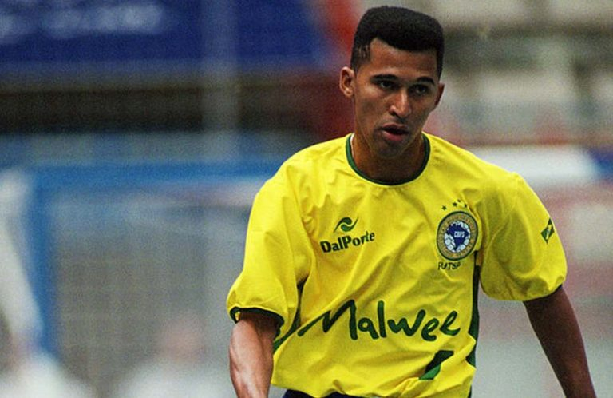
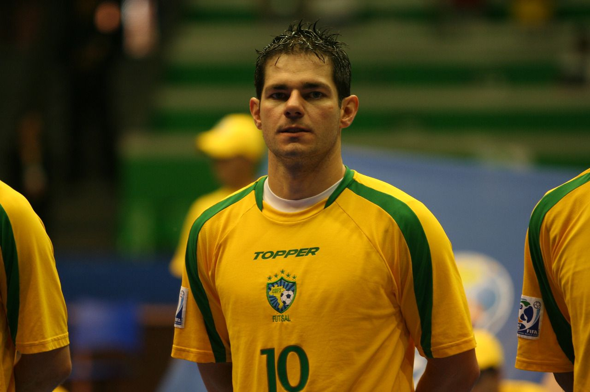

Falcão
País:
Brasil
Títulos: 2x Mundial, 9x Liga Nacional

Títulos em competições nacionais e internacionais com a Seleção Brasileira
Willian
País:
Brasil
Títulos: Melhor Goleiro do Mundo de 2023
Campeão da Copa do Mundo de Futsal
Títulos em competições nacionais e internacionais com a Seleção Brasileira

Schumacher
País:
Brasil
Títulos: 2x Mundial, 4x Liga Espanhola

Artilheiro dos Mundiais de 1996 e 2000
Tricampeão da Liga Sul-Americana

Manuel Tobias
País:
Brasil
Títulos:Bicampeão mundial de futsal FIFA (1996, 2000)
Melhor jogador do mundo FIFA (2000, 2001)
Artilheiro dos Mundiais de 1996 e 2000
Tricampeão da Liga Sul-Americana
Lenísio
País:
Brasil
Títulos:Bicampeão mundial de futsal FIFA (1996, 2000)
Campeão mundial FIFA (2008)
Melhor jogador do mundo FIFA (2000)
Vários títulos da Liga Nacional de Futsal (LNF)
Campeão da Liga Espanhola com o ElPozo Murcia